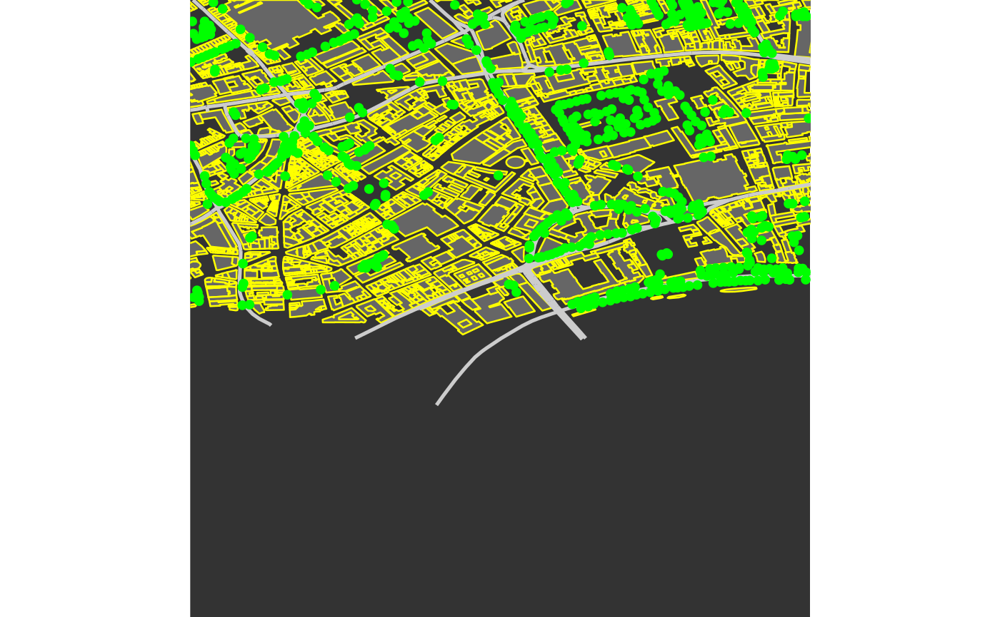

Adds layers of spatial objects (polygons, lines, or points generated by
extract_osm_objects) to a graphics object initialised with
osm_basemap.
add_osm_objects(map, obj, col = "gray40", border = NA, hcol, size, shape)
| map | A |
|---|---|
| obj | A spatial ( |
| col | Colour of lines or points; fill colour of polygons. |
| border | Border colour of polygons. |
| hcol | (Multipolygons only) Vector of fill colours for holes |
| size | Size argument passed to |
| shape | Shape of points or lines (the latter passed as |
modified version of map to which objects have been added.
osm_basemap, extract_osm_objects.
bbox <- get_bbox (c (-0.13, 51.5, -0.11, 51.52)) map <- osm_basemap (bbox = bbox, bg = "gray20")# NOT RUN { # The 'london' data used below were downloaded as: dat_BNR <- extract_osm_objects (bbox = bbox, key = 'building', value = '!residential') dat_HP <- extract_osm_objects (bbox = bbox, key = 'highway', value = 'primary') dat_T <- extract_osm_objects (bbox = bbox, key = 'tree') # }map <- add_osm_objects (map, obj = london$dat_BNR, col = "gray40", border = "yellow") map <- add_osm_objects (map, obj = london$dat_HP, col = "gray80", size = 1, shape = 2) map <- add_osm_objects (map, london$dat_T, col = "green", size = 2, shape = 1) print_osm_map (map) # Polygons with different coloured borders map <- osm_basemap (bbox = bbox, bg = "gray20")map <- add_osm_objects (map, obj = london$dat_HP, col = "gray80") map <- add_osm_objects (map, london$dat_T, col = "green") map <- add_osm_objects (map, obj = london$dat_BNR, col = "gray40", border = "yellow", size = 0.5) print_osm_map (map)